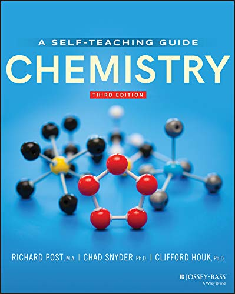

Chemistry: Concepts and Problems, A Self-Teaching Guide (Wiley Self-Teaching Guides)
Price: 500.00 INR
Product Details
- ASIN: B08GHKDF2F
- Publisher: Jossey-Bass; 3rd edition (20 August 2020)
- Language: English
- File size: 21423 KB
- Text-to-Speech: Enabled
- Enhanced typesetting: Enabled
- X-Ray: Not Enabled
- Word Wise: Enabled
- Print length: 421 pages
- Best Sellers Rank: #585,930 in Kindle Store (See Top 100 in Kindle Store)
- #344 in Chemistry eTextbooks
- #968 in Chemistry
- #2,272 in Education eTextbooks